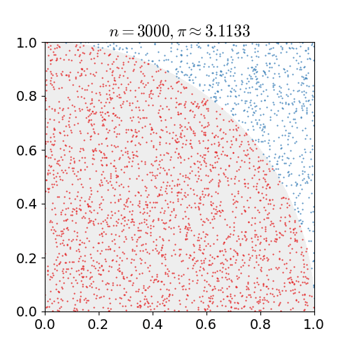

4. Programming On-node Parallelism
Overview
Welcome to the fourth HIPC practical!
This week, we’re entering the world of multicore. We’ll still be using some of the skills developed in the last practical to ensure we make optimal use of a single core, but we’ll also be expanding this to multi-core and multi-processor systems.
We’ll start by revisiting an exercise from last week, and then we’ll develop a new code based on a Monte Carlo method.
Finally, we’ll get started with Viking, the University’s HPC platform.
Exercise 1
We’ll start this week with the Spheres application from the last Practical. If you didn’t manage to complete the previous exercises, now is the time to catch up!
Note: You can complete this exercise from the code you achieved after Exercise 2, 3 or 4 (though working from Exercise 3 or 4 is probably preferred!).
This exercise has two parts.
Part 1: First, parallelise your code with OpenMP. Run your application with different numbers of threads, and analyse its scaling behaviour.
Part 2: At the moment the code outputs a table of the spheres with their position, size, circumference, volume and intersects. Add code to find the size of the largest and smallest spheres, and parallelise them with OpenMP (Hint: you might want to use reductions).
Monte Carlo Methods
For the next few exercises we’re going to develop a small application to calculate the value of Pi (3.141592…), and we’re going to do this with a Monte Carlo method.
Monte Carlo methods are a broad class of algorithm based on using repeated random sampling to converge on a numerical result. Essentially, Monte Carlo methods follow a particular pattern:
- Definue a domain of possible inputs
- Generate inputs randomly from a probability distribute over the domain
- Perform a deterministic computation on the inputs
- Aggregate the results
More simulations or computations typically leads to a more accurate answer, with a smaller window of uncertainty.
Calculating Pi with Monte Carlo
We can use a simple Monte Carlo method to calculate a value for Pi.
Imagine a circular unit-radius dart board centered at (0,0), contained within a 2 × 2 square (running from -1 to 1 in each direction). If we were to randomly throw darts at the dart board and count the number that fall within the circle, compared to the total number of darts thrown, we should find that this ratio approaches the value of Pi/4.
We can simplify this slightly by only considering a single quadrant of our “dart board” (since the other 4 quadrants are identical rotations).

Figure 1: A Monte Carlo method approximating Pi
Now the method is simply:
- Generate an x and y value between 0.0 and 1.0
- If point (x,y) is within the quarter circle i. Increment “in” counter
- Increment “total experiments” counter
Our value of Pi is then calculated by: (in / counter) * 4.0.
Exercise 2
Write a simple, single threaded code to calculate Pi using this method. How close do you get after 100 evaluations? 1000? 1000000?
Exercise 3
With everything we do in HIPC, we’re interested in High Performance!
Instrument your code with appropriate timers and evaluate its performance.
Exercise 4
Optimise your MC-Pi code with SIMD and OpenMP. How much can you improve its performance?
Hint: C’s math.h
rand()function is not thread safe. It relies on shared hidden state that may affect its performance and randomness (i.e. two or more threads may generate the same random sequence or a race condition could skew the distribution of random numbers). Instead, you could use an alternative random number generator with visible state (such that each thread can maintain its own state). You could use the random number generator below, taken (and modified) from Numerical Recipes (page 340).// Modified from Numerical Recipes Page 340 http://numerical.recipes/book/book.html typedef struct { unsigned long long u; unsigned long long v; unsigned long long w; } random_generator; random_generator init_random_generator(unsigned long long seed) { random_generator r; r.v = 4101842887655102017LL; r.w = 1; r.u = seed ^ r.v; r.v = r.u; r.w = r.v; return r; } double random_double(random_generator *r) { //Return 64-bit random integer. r->u = r->u * 2862933555777941757LL + 7046029254386353087LL; r->v ^= r->v >> 17; r->v ^= r->v << 31; r->v ^= r->v >> 8; r->w = 4294957665U*(r->w & 0xffffffff) + (r->w >> 32); unsigned long long x = r->u ^ (r->u << 21); x ^= x >> 35; x ^= x << 4; return 5.42101086242752217E-20 * ((x + r->v) ^ r->w); } ... random_generator my_random = init_random_generator(time(NULL)); double x = random_double(&my_random);When creating a random number generator, be sure to use a unique seed for each thread (for example, use the thread id in some way).
Getting Started with Viking
You should now have an account on the University’s HPC platform, Viking.
Next weeks practical will take place on Viking, so let’s check that you can access and use the system.
Logging in
The first thing to do is check that we can log in to Viking. Open a terminal and try:
$ ssh viking.york.ac.uk
If you’re using your own laptop (where your username is likely different), you can specify your username on the command line with:
$ ssh YOUR_USERNAME_HERE@viking.york.ac.uk
Hopefully, this should provide you with a terminal on Viking!
If you’d like to use Viking outside of the lab (or from a Windows platform, etc.), you can find detailed log in information on the Connecting to Viking page.
Loading an Environment Module
OK, so hopefully we’re now logged in to Viking and ready to do some work. Let’s start by loading a compiler. We can view all available modules with:
$ module avail
---------------------------------------------- /opt/apps/eb/modules/base ----------------------------------------------
PSM2/12.0.1
---------------------------------------------- /opt/apps/eb/modules/bio -----------------------------------------------
ADMIXTURE/1.3.0 PLINK/2.00a2.3-GCC-10.3.0
AMPHORA2/20190730-gompi-2020b-Java-13-pthreads-avx2 PoolHapX/2020-03-29-foss-2019b-Java-11
ARAGORN/1.2.41-foss-2019b ProFit/3.3-GCC-10.3.0
ARAGORN/1.2.41-foss-2020a Proteinortho/6.0.27-foss-2020a-Python-3.8.2
ARAGORN/1.2.41-foss-2021b (D) Pysam/0.15.3-GCC-8.3.0
AUGUSTUS/3.3.3-foss-2020a Pysam/0.16.0.1-GCC-8.3.0
...
But notice that it’s a very long list! We can search modules with the spider command (and we can search for a GCC compiler!):
$ module spider GCC
-------------------------------------------------------------------------------------------------------------------
GCC:
-------------------------------------------------------------------------------------------------------------------
Description:
The GNU Compiler Collection includes front ends for C, C++, Objective-C, Fortran, Java, and Ada, as well as
libraries for these languages (libstdc++, libgcj,...).
Versions:
GCC/7.3.0-2.30
GCC/8.2.0-2.31.1
GCC/8.3.0
GCC/8.3.0-2.32
...
Let’s just load a relatively new version of GCC for now (11.2.0):
$ module load GCC/11.2.0
The following have been reloaded with a version change:
1) GCC/10.2.0 => GCC/11.2.0 3) binutils/2.35-GCCcore-10.2.0 => binutils/2.37-GCCcore-11.2.0
2) GCCcore/10.2.0 => GCCcore/11.2.0 4) zlib/1.2.11-GCCcore-10.2.0 => zlib/1.2.11-GCCcore-11.2.0
$ gcc --version
gcc (GCC) 11.2.0
Copyright (C) 2021 Free Software Foundation, Inc.
This is free software; see the source for copying conditions. There is NO
warranty; not even for MERCHANTABILITY or FITNESS FOR A PARTICULAR PURPOSE.
Again, the Viking documentation is a good source of detailed additional information on this topic – Software on Viking.
Submitting a Job
You’ll notice that your userspace (home) on Viking is not the same as your userspace on the University’s network. This is deliberate to ensure that the cluster is operational even if the University’s network goes down, and that jobs don’t run from a remote file system that is not designed for HPC. Instead you’ll have to either write your applications on Viking (using your favourite terminal text editor, like nano or vim), or you’ll have to copy them over with scp (or sync them with git etc.). You might want to copy them from a lab machine like so:
#copy a single file to the scratch folder
$ scp myfile.c viking.york.ac.uk:~/scratch/
#copy a directory to the scratch folder with recursive copy (-r)
$ scp -r my_directory viking viking.york.ac.uk:~/scratch/
#copy a single file to scratch and specify your username
$ scp myfile.c YOUR_USERNAME_HERE@viking.york.ac.uk:~/scratch/
Responsible Viking Usage
Your home directory is not designed for fast access, or large datasets. Parallel jobs should be run from the “scratch” file system (which you can access through the
scratchfolder in your home directory).You should not run computational tasks on the login node (and doing so might result in a ban on the system). Instead, you should compile your applications on the login node but execute your programs on computational nodes.
Viking runs the Slurm scheduling system. On Viking, there are two kinds of job you can request: A batch job (where the cluster queues and runs a script, storing the output in a file), or an interactive job (where you are presented with a shell on a compute node).
Batch Jobs
Batch jobs are prepared as simple shell scripts (i.e. bash scripts), that are submitted using the sbatch command. You can specify job submission parameters on the command line, or you can include them in the script at the top (after the hash-bang), with the #SBATCH prefix. So for example, your submission script might look like this (simple.job):
#!/bin/bash
#SBATCH --time=00:10:00 # Maximum time (HH:MM:SS)
#SBATCH --ntasks=1 # run on a single CPU
#SBATCH --mem=1gb # reserve 1GB memory for job
#SBATCH --output=simple_job_%j.log # standard output and error log
#SBATCH --partition=teach # run in the teaching queue
#SBATCH --account=CS-TEACH-2023 # specify the CS teaching account
echo simple.job running on `hostname`
sleep 600
Here, the job simply runs an echo command and then sleeps for 10 minutes. We can submit this job with sbatch like so:
$ sbatch simple.job
Submitted batch job 147874
$ squeue -u YOUR_USERNAME_HERE
JOBID PARTITION NAME USER ST TIME NODES NODELIST(REASON)
147874 teach simple.j usr1 R 0:06 1 node054
$ ls
simple.job slurm-147874.out
$ cat slurm-147874.out
simple.job running on node054.viking2.yor.alces.network
Alternatively, we could have specified many of the options in our command line like so:
$ sbatch --partition=teach --ntasks=10 ...
More information on the parameters you can use in your job submission scripts can be found here: Jobscript Examples
Interactive Jobs
Interactive jobs are useful when you are debugging code (to quickly edit, recompile and run without having to submit many jobs), and for when you have large compilation jobs that you don’t want to consume all resources on the login nodes.
You can get an interactive job with the srun command.
$ srun --account=CS-TEACH-2023 --ntasks=1 --time=00:30:00 --pty /bin/bash
srun: job 6485884 queued and waiting for resources
srun: job 6485884 has been allocated resources
$
You should notice that when you have been granted an interactive job, your terminal prompt will indicate that you are now on a node, rather than the viking login nodes.
Again, all things related to submitting jobs to Viking can be found in the documentation – Submitting Jobs.
Checking and Cancelling Jobs
The final thing we’ll briefly touch upon is how to check on our jobs, and how to cancel them.
We can check the queue (to see where we lie in the queue) with the squeue command.
$ squeue
JOBID PARTITION NAME USER ST TIME NODES NODELIST(REASON)
17007908 gpu 15sb2_ne xxx100 PD 0:00 1 (QOSMaxGRESPerUser)
17066762 gpu TKt3 xx1655 PD 0:00 1 (QOSMaxGRESPerUser)
17066763 gpu Tuvat3 xx1655 PD 0:00 1 (QOSMaxGRESPerUser)
17066764 gpu Tucft3 xx1655 PD 0:00 1 (QOSMaxGRESPerUser)
3474167 gpu train.sh xx2098 PD 0:00 1 (JobHeldUser)
3474140 gpu train.sh xx2098 PD 0:00 1 (JobHeldUser)
17007907 gpu 15sb7_ne xxx100 R 1-00:06:02 1 gpu01
17007906 gpu 15sb6_ne xxx100 R 1-00:33:01 1 gpu01
17066761 gpu TWt3 xx1655 R 8:59:00 1 gpu01
...
We can check out our own jobs with the sacct command.
$ sacct
JobID JobName Partition Account AllocCPUS State ExitCode
------------ ---------- ---------- ---------- ---------- ---------- --------
17095020 simple.jo+ teach cs-teach-+ 1 RUNNING 0:0
17095020.ba+ batch cs-teach-+ 1 RUNNING 0:0
And we can cancel a job using the scancel command. The output of our job will reflect that the job was cancelled.
$ scancel 17095020
$ cat simple_job_17095020.log
simple.job running on node002.yor.viking2.alces.network
slurmstepd: error: *** JOB 17095020 ON node002 CANCELLED AT 2022-02-07T13:54:29 ***
============================
Job utilisation efficiency
============================
Job ID: 17095020
Cluster: viking
User/Group: usr1/clusterusers
State: CANCELLED (exit code 0)
Cores: 1
CPU Utilized: 00:00:00
CPU Efficiency: 0.00% of 00:00:32 core-walltime
Job Wall-clock time: 00:00:32
Memory Utilized: 1.88 MB
Memory Efficiency: 0.18% of 1.00 GB
Requested wall clock time: 00:10:00
Actual wall clock time: 00:00:32
Wall clock time efficiency: 5.3%
Job queued time: 00:00:00
Exercise 5
Your final exercise this week is to log in to Viking, copy over one of the exercises from this class, compile it and run it in a job submission script.
You should only use a single node, but you can change how many cores you request, and other environmental variables (e.g.
OMP_PROC_BINDandOMP_PLACES) and see what effect this has on performance.
Important
If you are unable to access Viking for whatever reason, you must let me know as soon as possible. Viking access will be vital for next weeks practical and your assessment.
Bonus Exercise
If you have time, and you completed the bonus exercise in the last practical, you could optimise your n-body code on a whole node.